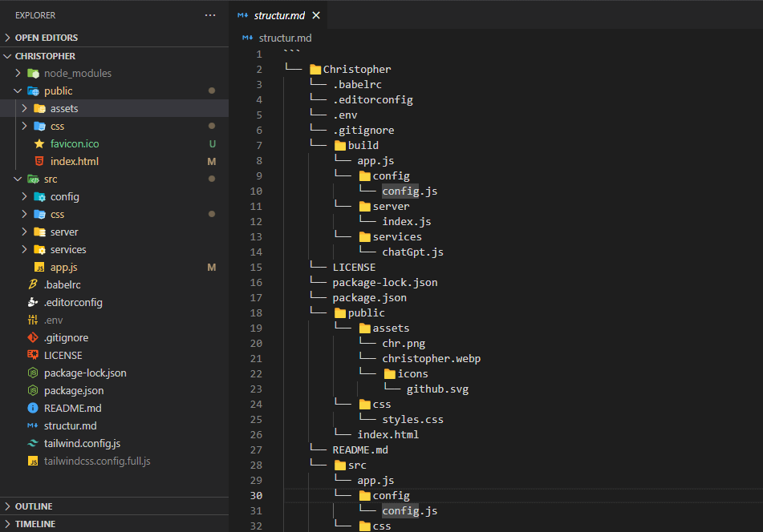
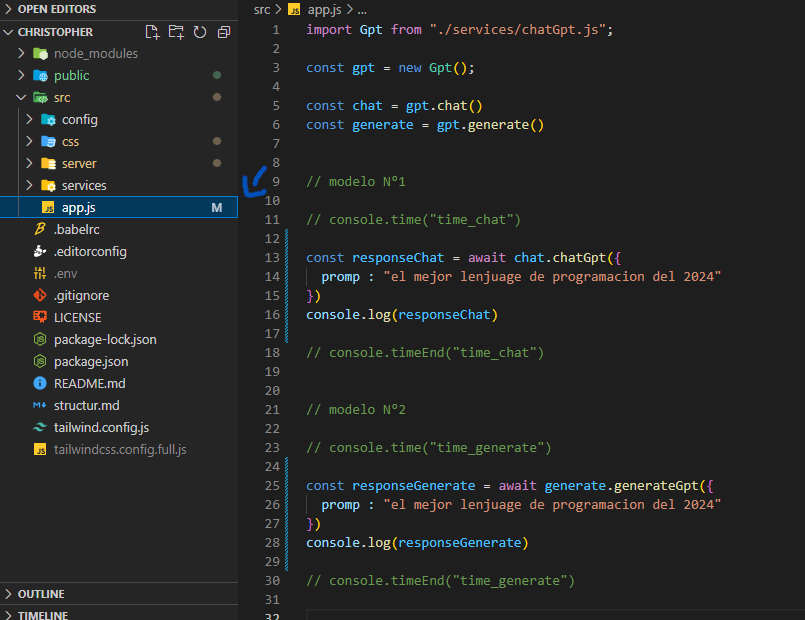
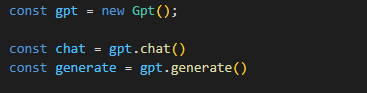
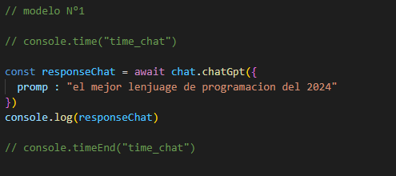
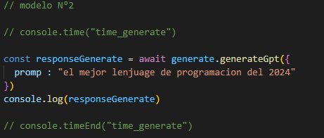

Documentacion del GPT Christopher
Bienvenidos a Christopher👋🏽!!
en este pequeño pero grandioso proyecto pude elaborar un GPT con js,
este se desarrollada para apliar mi destreza con apis externas e adentrarme en el mundo de la
IA.🌐
Cabe decir que se planeaba desde un principio desarrollar un clon de ChatGPT para asi gestionar mis
tareas cotidianas e ir entrenando mi propio script utilizando un modelo artificial de la empresa
"Cohere-ai", PERO, al querer trabajar con la libreria en el navegador se produce un error. que ire
buscando su solucion para asi proseguir con lo planeado.💪🏽
Introducion
Para empezar debemos clonar el repositorio con las ultimas novedades, para eso copiamos la siguiente
URL https://github.com/vanegas-27/Christopher y en la terminal o consola
favorita se ejecuta el siguiente comando.
git clone https://github.com/vanegas-27/Christopher
posteriormente ingresamos al editor de codigo de preferencia y abrimos el proyecto clonado
como Christopher, esto te dejara una estructura similar a esta.

Ya es cuestion de indagar en los diversos directorios y familiarse con la estructura del proyecto.
en este caso explicare como funcionan hasta el momento los dos modelos desarrollados.

Nos dirigimos al script app.js, que en este caso es el cual se encarga de llamar al modelo GPT
especifico.
hasta el momento se cuenta con 2 modelos GPT, pero se iran incorporando muchos mas y con la
interface
para dialogar directamente desde el front-end.
Instancia de los modelos

Estos modelos esperan un valor por defecto que seria un dicionario que a su vez contiene la promp,
pero cabe decir que se le puede pasar mas valores o atributos dependiendo de sus necesidades.
Modelo N°1

Este modelo fue implementado para brindar una respuesta mucho mas agradable o
mas extensa para el usuario y asi poder brindarle la informacion de forma mas clara.
si bien es muy facil su uso, se puede complicar si nos adentramos aun mas en la implementacion.
Modelo N°2

Este modelo es mucho mas directo y consiso que el anterior, este nos brinda un mensaje mucho mas
corto en sus casos. con la informacion necesaria dependiendo la promp que se le pase al modelo.
su uso es muy parecido al anterior aunque por detras son casos muy diferentes.